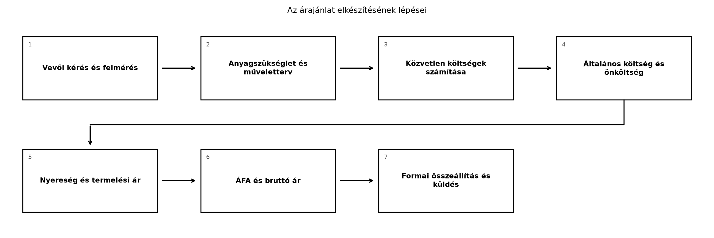
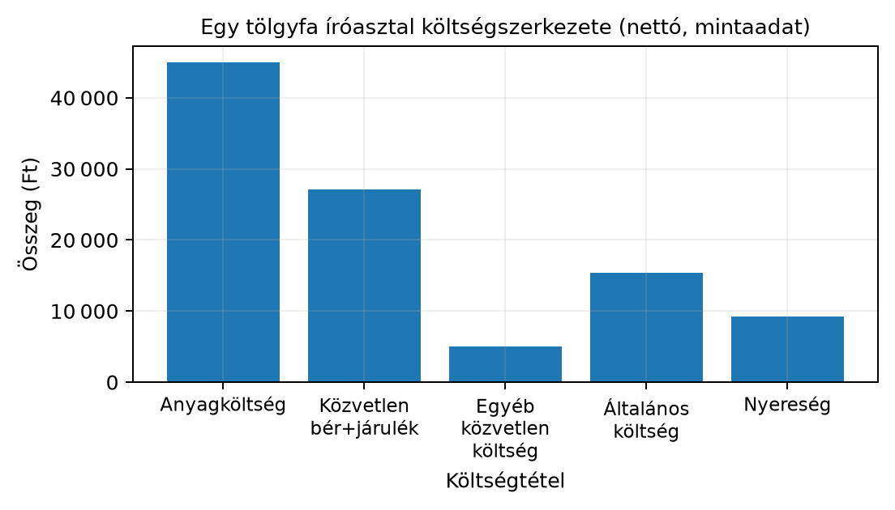

Egy vevő betér a műhelybe: „Mennyibe kerülne egy tölgyfa íróasztal, körülbelül?” Az asztalos fejben gyorsan összeszámolja az anyagot és a munkát, majd küld egy e-mailt. Két hét múlva kiderül, hogy a szállítás, a helyszíni szerelés, a csomagolás és a hulladék költsége kimaradt. Az árajánlat nem tipp, hanem dokumentált számítás. Ebben az alfejezetben megtanulod, hogyan építsd fel az árajánlatot a közvetlen költségektől a bruttó árig, és hogyan kerüld el a leggyakoribb hibákat.
Az árajánlat készítése egy lépéssor. Nézd meg a folyamatábrát:

A kész árajánlatban a költségek egymásra épülnek, mint egy torony. Az alábbi oszlopdiagram egy mintaárajánlat költségszerkezetét mutatja:

Definíció. Az árajánlat olyan írásos dokumentum, amelyben az eladó (asztalos, vállalkozó) egy konkrét termékre vagy szolgáltatásra meghatározott feltételekkel árat ad. Az árajánlat nem szerződés, de ha a vevő elfogadja, a szerződéskötés alapja lesz.
Definíció. A termelési ár (más néven nettó ár) az az ár, amely fedezi a teljes önköltséget és a vállalkozó nyereségét, de nem tartalmazza az általános forgalmi adót (ÁFA). Képlete:
Definíció. A kiszámlázott ár (más néven bruttó ár) az az összeg, amelyet a vevő ténylegesen fizet. Tartalmazza a termelési árat és az arra számított ÁFÁ-t. Képlete:
Szabály. Az árajánlatban minden pénzösszeget nettó és bruttó bontásban kell megadni, és az ÁFA kulcsot külön kell feltüntetni. Magyarországon az általános ÁFA-kulcs jelenleg 27% (ellenőrizendő: aktuális kulcs a hatályos áfatörvény szerint). Kedvezményes kulcsok is létezhetnek egyes termékekre, de a faipari bútorok és nyílászárók tipikusan a 27%-os kulcs alá tartoznak (ellenőrizendő). Ha a vállalkozó alanyi adómentes (az értékhatár ellenőrizendő: NAV), az árajánlatban nincs ÁFA-sor; tüntesd fel: „alanyi adómentes” – lásd a Vállalkozási formák, a vállalkozás indítása és működése alfejezetet. Magánszemély vevőnek mindig a ténylegesen fizetendő végösszeget (bruttó ár) is add meg (ellenőrizendő: fogyasztóvédelmi árfeltüntetési szabály).
Szabály. Az árajánlat költségtételei a következő sorrendben épülnek fel:
Definíció. Az összköltség a vevő szempontjából a bruttó ár, plusz esetlegesen felmerülő egyéb díjak (pl. külön kiszámlázott szállítás). Az árajánlatban minden tételt úgy kell feltüntetni, hogy a vevő pontosan lássa, mit fizet.
Adott. Tölgyfa íróasztal, 1 darab. Az anyagnorma és a technológiai lap alapján:
Keresett. A termelési ár (nettó) és a bruttó ár.
Számítás lépésenként.
Először a bérköltség:
A bérjárulék:
Egyéb közvetlen költség:
Közvetlen költség összesen:
Általános költség:
Teljes önköltség:
Nyereség:
Termelési ár (nettó):
ÁFA:
Bruttó ár:
Megjegyzés. Ez a példa a rezsit a (b) módszerrel, a közvetlen költség 20 %-ában számolja. Rezsióradíjjal (mintaként 12 h × 1 800 Ft/h = 21 600 Ft, ellenőrizendő) a rezsi 15 424 Ft helyett 21 600 Ft lenne; a két módszer eredménye eltér, ezért a vállalkozás egyet használjon következetesen.
Ellenőrzés. A bruttó ár a termelési ár -szerese: , ami kerekítve egyezik. A költségszerkezet összege a diagrammal is összhangban van.
A kalkulációt táblázatban is rögzítjük:
| Költségtétel | Számítás | Összeg (Ft) |
|---|---|---|
| Közvetlen anyagköltség | anyagnorma szerint | 45 000 |
| Közvetlen bérköltség | 12 h × 2 000 Ft/h | 24 000 |
| Bérjárulék | 24 000 × 13% | 3 120 |
| Egyéb közvetlen költség | csomagolás + szállítás + szerelés | 5 000 |
| Közvetlen költség összesen | 77 120 | |
| Általános költség | 77 120 × 20% | 15 424 |
| Teljes önköltség | 92 544 | |
| Nyereség | 92 544 × 10% | 9 254 |
| Termelési ár (nettó) | 101 798 | |
| ÁFA | 101 798 × 27% | 27 485 |
| Bruttó ár (kiszámlázott) | 129 283 |
A gyakorlatban a termelési árat gyakran kerekítik, például 101 800 Ft-ra. Ekkor a bruttó ár . A kerekítés mértéke a vállalkozó döntése, de az árajánlatban a kerekítés szabályát egységesen kell alkalmazni.
Adott. A fenti tölgyfa íróasztal bruttó ára 129 283 Ft. A vevővel kötött megállapodás szerint a rendeléskor 30% előleget kell fizetni, a fennmaradó összeget az átadáskor.
Keresett. Az előleg és a fennmaradó összeg bruttó értéke.
Számítás.
Ellenőrzés. A fennmaradó a bruttó ár 70%-a: , ami egyezik.
Szabály. Az árajánlatnak formailag is egyértelműnek kell lennie. A következő elemeket minden esetben tartalmaznia kell:
Az alábbi táblázat egy egyszerű, de teljes árajánlat tételsorát mutatja a fenti példához:
| Tétel | Megnevezés | Mennyiség | Nettó egységár (Ft) | Nettó érték (Ft) |
|---|---|---|---|---|
| 1 | Tölgyfa íróasztal 1400 × 700 × 25 mm | 1 db | 101 798 | 101 798 |
| Összesen | 101 798 | |||
| ÁFA 27% | 27 485 | |||
| Bruttó összeg | 129 283 |
A táblázat alatt a szöveges feltételek állnak: érvényesség, előleg, garancia, szállítás.
Az árajánlatot PDF formátumban, e-mailben vagy személyesen adjuk át. A PDF megőrzi a formázást, és nem módosítható. Az e-mail tárgya legyen pontos: „Árajánlat – Tölgyfa íróasztal – A-2025/001”.
Szabály. A tárgyaláson az árajánlatot nem szabad csak szóban módosítani. Ha a vevő kér valamit – például más méretet, olcsóbb anyagot, rövidebb határidőt –, a módosítást írásban kell rögzíteni, és új árajánlatot vagy árajánlat-kiegészítést kell küldeni.
Tárgyalási helyzetek:
Elfelejtett szállítás és szerelés. A termék elkészült, de a helyszínre vitel és a beépítés kimaradt az árból. Helyes gyakorlat: minden árajánlatban legyen külön sor a szállításra és a szerelésre, még akkor is, ha nulla („szállítás a telephelyen történő átvétellel”).
Hulladék és selejt figyelmen kívül hagyása. A fűrészpor, a gyalulási ráhagyás, a hibás alkatrész mind anyagveszteség. Ha az anyagnormában nincs 10–15% ráhagyás, az anyagköltség alulbecsült lesz. Helyes gyakorlat: az anyagszükségletet a Szabásjegyzék és anyagnorma alfejezet szerint, ráhagyással számoljuk.
Rossz ÁFA-kulcs vagy az ÁFA elfelejtése. Ha a termelési árat adjuk meg bruttó árként, a vállalkozó befizeti az ÁFÁT a saját hasznából. Helyes gyakorlat: minden árajánlatban a nettó és a bruttó összeg is szerepeljen, az ÁFA külön soron.
Az általános költség elhagyása. A műhely bérleti díja, a fűtés, a szerszámkopás nincs benne az árban, ezért a vállalkozó látszólag nyereséges, valójában veszteséges. Helyes gyakorlat: az általános költséget mindig számoljuk be, akár fix összegként, akár százalékban.
Nincs érvényességi idő. Ha az anyagár emelkedik, a régi árajánlat már nem fedezi a költségeket, de a vevő ragaszkodik hozzá. Helyes gyakorlat: minden árajánlatban szerepeljen: „Az árajánlat érvényes: 30 napig”.
Pontatlan tételsor. A vevő nem tudja, mit kap a pénzéért. Helyes gyakorlat: a tételsor legyen részletes, de ne túl hosszú; egy asztalnál elég a főbb tételek, a vasalatokat lehet összevontan.
Egy asztalos vállalkozó árajánlatot adott egy beépített gardróbszekrényre. A kalkulációban szerepelt az anyag, a munka, a szerelés, de a szállítás kimaradt. A vevő kifizette az előleget, majd kérte, hogy az asztalos szállítsa ki a bútort a műhelyből a lakására. Az asztalos kénytelen volt ingyen szállítani, mert az árajánlatban nem szerepelt a szállítási díj. A hiba oka az volt, hogy a kalkulációban a szerelést és a szállítást egyben kezelte, de a szállítás költsége (üzemanyag, rakodás, idő) kimaradt. A tanulság: az árajánlatban a szállítás és a szerelés külön sor legyen, akkor is, ha a vevő később lemondja. A dokumentált árajánlat védi a vállalkozót és a vevőt is.
Továbbvitt eredmény. Az itt bemutatott árajánlat-szerkezetet és számítási menetet használjuk a Szerződéskötés, garancia, megrendelő, szállítólevél és számla alfejezetben, valamint a Vizsgaremek és gyakorlati vizsgafeladat: tervezés, dokumentáció, értékelés vizsgaremek-dokumentációjában.
Válaszolj röviden, majd ellenőrizd a Megoldások első részében.
1. feladat (A)
Definiáld a termelési árat és a kiszámlázott árat, és írd fel a
képletüket.
2. feladat (A)
Egy termék nettó termelési ára 250 000 Ft. Az ÁFA-kulcs 27%. Mennyi az
ÁFA és a bruttó ár?
3. feladat (B)
Egy asztal árajánlatához a következő adatokat ismered: anyagköltség 60
000 Ft, bér 30 000 Ft, bérjárulék 13%, egyéb közvetlen költség 8 000 Ft.
Az általános költség a közvetlen költség 20%-a, a nyereség az önköltség
10%-a. Számold ki a teljes önköltséget, a termelési árat és a bruttó
árat 27% ÁFÁ-val.
4. feladat (B)
Sorolj fel legalább öt formai elemet, amelyet egy árajánlatnak
tartalmaznia kell, és indokold röviden mindegyiket.
5. feladat (C)
Egy árajánlatban a szállítás és a szerelés nem szerepel, az ÁFA-t 27%
helyett 5%-kal számolták. Mi lehet a következmény? Hogyan javítható az
árajánlat, még mielőtt a vevő elfogadja?
6. feladat (C)
A vevő azt kéri, hogy a 30%-os előleget csökkentsd 10%-ra, és a
garanciát hosszabbítsd meg 5 évre. Hogyan reagálj? Milyen kockázatokat
kell mérlegelni, és hogyan lehet ezt az árajánlatban érvényesíteni?
7. feladat (D)
Készíts egy komplett árajánlatot egy kisméretű tölgyfa fali polcra a
következő adatokkal: anyagköltség 18 000 Ft, bér 12 000 Ft, járulék 13%,
egyéb közvetlen 3 000 Ft (csomagolás + szállítás), általános költség 20%
a közvetlenre, nyereség 10% az önköltségre, ÁFA 27%. Az ajánlat száma
legyen A-2025/002, érvényessége 30 nap, előleg 30%. Add meg a tételsort,
a nettó és bruttó összeget, valamint a fizetési ütemezést.
1. feladat (A)
Termelési ár = teljes önköltség + nyereség. Kiszámlázott ár = termelési
ár + ÁFA = termelési ár × (1 + ÁFA%/100).
2. feladat (A)
ÁFA =
.
Bruttó =
.
3. feladat (B)
Bérjárulék =
.
Közvetlen =
.
Általános =
.
Önköltség =
.
Nyereség =
.
Termelési ár =
.
ÁFA =
.
Bruttó =
.
4. feladat (B)
Fejléc (cégadatok), vevő adatai, árajánlat száma és kelte, érvényesség,
tételsorok, fizetési feltételek, szállítás és szerelés, garancia,
aláírás. Indoklás: mindegyik a pontos szerződéses alapot és a felelősség
megosztását szolgálja.
5. feladat (C)
A szállítás és szerelés kimaradása: a vállalkozó saját költségén végzi
el a szállítást és szerelést, vagy a vevő vitatja a pluszköltséget. Az
5% ÁFA alkalmazása adózási hiba, mert a bútorokra 27% vonatkozik
(ellenőrizendő). A javítás: új árajánlatot kell készíteni, ahol a
szállítás és szerelés külön tétel, az ÁFA 27%, és az érvényességi időt
meg kell adni.
6. feladat (C)
A 10% előleg nagyobb kockázatot jelent a vállalkozónak, mert kevesebb
pénz érkezik a gyártás megkezdése előtt. Az 5 éves garancia magasabb
kockázatot jelent a meghibásodások miatt. A válasz: az előleget lehet
csökkenteni, de akkor a fizetési ütemezést úgy kell módosítani, hogy a
fennmaradó nagyobb része korábban esedékes legyen (pl. 50% a gyártás
közben). A hosszabb garancia beépíthető a nyereség emelésével vagy külön
garancia-díjjal. Az árajánlatban ezeket a feltételeket rögzíteni
kell.
7. feladat (D)
Számítás: Bérjárulék =
.
Közvetlen =
.
Általános =
.
Önköltség =
.
Nyereség =
.
Termelési ár =
.
ÁFA =
.
Bruttó =
.
Árajánlat minta:
| Tétel | Megnevezés | Mennyiség | Nettó egységár (Ft) | Nettó érték (Ft) |
|---|---|---|---|---|
| 1 | Tölgyfa fali polc 600 × 200 × 25 mm | 1 db | 45 619 | 45 619 |
| Összesen | 45 619 | |||
| ÁFA 27% | 12 317 | |||
| Bruttó összeg | 57 936 |
Fizetési feltételek: előleg 30%, azaz 17 381 Ft a rendeléskor, a fennmaradó 40 555 Ft az átadáskor.
Az árajánlat írásos dokumentum, amely a vevő számára meghatározott termékre meghatározott feltételekkel árat ad. A költségszerkezet lépésenként épül fel: közvetlen anyagköltség, bér, járulék, egyéb közvetlen költség → közvetlen költség; általános költség → teljes önköltség; nyereség → termelési ár (nettó); ÁFA → bruttó ár (kiszámlázott ár). A bruttó ár a termelési ár 1 + ÁFA%/100-szorosa. A formai elemek (fejléc, tételsorok, érvényesség, fizetési feltételek, garancia) biztosítják a szerződéses alapot. A leggyakoribb hibák: szállítás, szerelés, hulladék, ÁFA és általános költség kimaradása. Az árajánlatot PDF-ben küldjük, a tárgyaláson minden módosítást írásban rögzítünk. Továbbvitt eredmény: az árajánlat szerkezete és kalkulációja alapja a Szerződéskötés, garancia, megrendelő, szállítólevél és számla és a Vizsgaremek és gyakorlati vizsgafeladat: tervezés, dokumentáció, értékelés alfejezeteknek.
Forrástípusok: hatályos áfatörvény (ÁFA-kulcs, számla-előírások), adó- és járulékjogszabályok (bérjárulék mértéke), fogyasztóvédelmi és vállalkozási szerződésre vonatkozó előírások, irodai szoftverek használati útmutatói, árajánlat-sablonok. Ellenőrizendő: az ÁFA-kulcs aktuális értéke (jelenleg 27%), a szociális hozzájárulási adó mértéke (13% volt az utolsó ismert), a kedvezményes ÁFA-kulcsok köre, a jótállás és szavatosság kötelező időtartama, valamint az árajánlat minimális formai követelményei. A mintaárak és az órabér kitalált, szemléltető adatok.